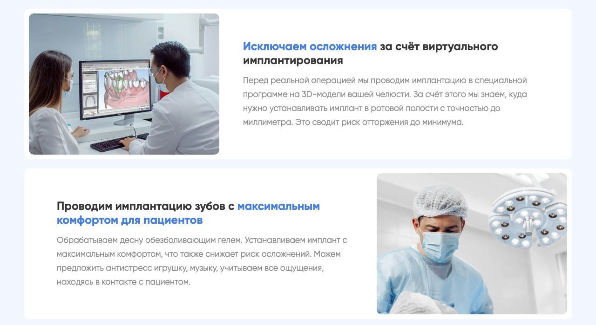
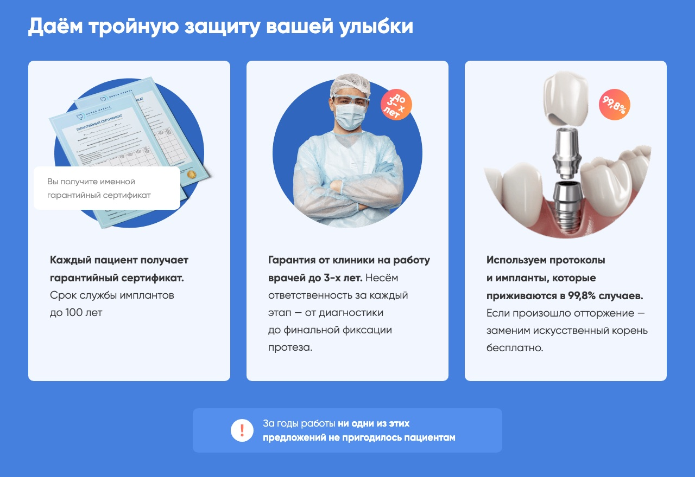
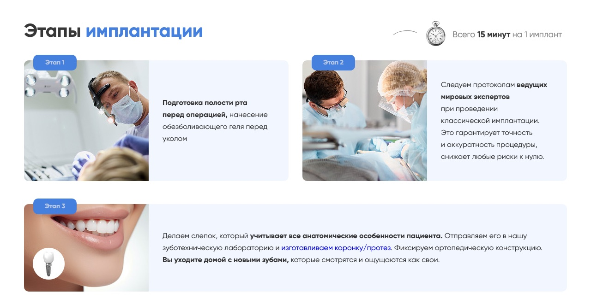
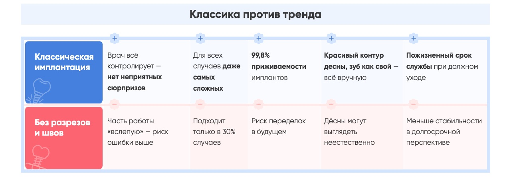
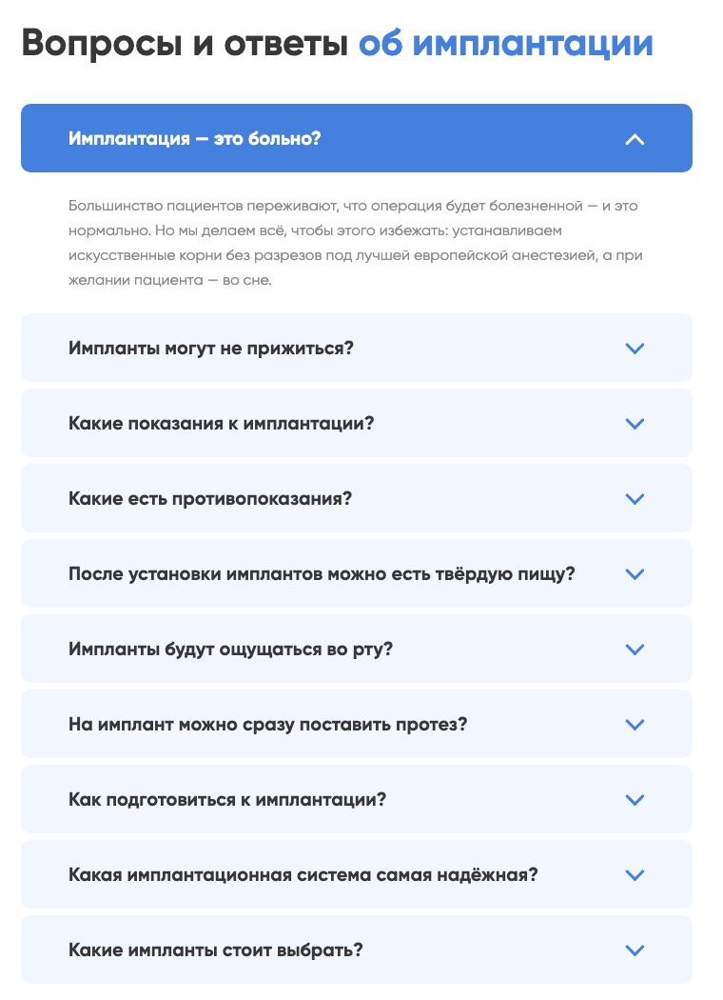
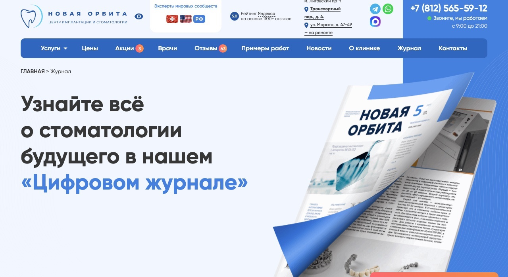
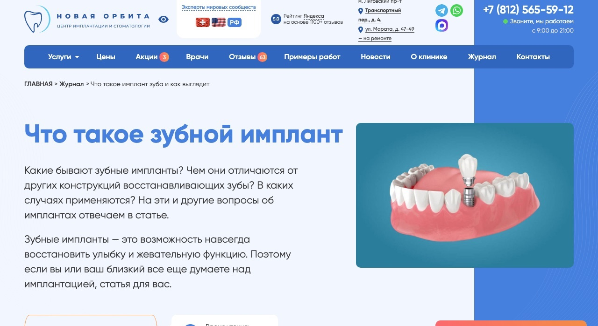
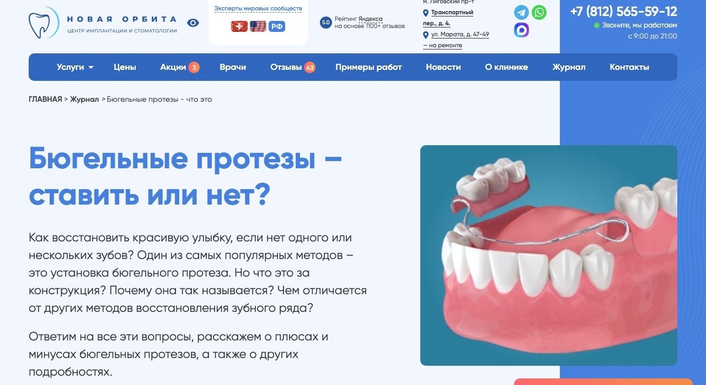

Медицина · контент-маркетинг
Перестроил контент-маркетинг стоматологии: +51% заявок с сайта и 150+ записей из блога за полгода
Стоматология «Новая Орбита», Санкт-Петербург · контент-маркетолог / копирайтер · с июня 2022 по сентябрь 2023
- +51%заявок с сайта через 6 месяцев к уровню до перезапуска
- 150+записей на консультацию из блога за 6 месяцев
- +17%заявок со страниц услуг в первый месяц после перезапуска
- +25–30%CTR объявлений в Яндекс Директе после перехода на офферы под сегменты
Данные: Яндекс Метрика, UTM-метки и CRM клиники, кабинет Яндекс Директа
Было
Сайт клиники рассказывал об услугах, но плохо подводил к записи.
Страницы имплантации, протезирования и ортодонтии были написаны с позиции врача: много терминов и описаний методик, мало ответов на вопросы пациента. Человек, который выбирает клинику, не мог понять по странице, подходит ли ему лечение и чего ждать.
Информация на сайте была, но неполная и разрозненная. Страницы не закрывали ключевые возражения (боль, риски, стоимость, гарантии) и не показывали путь лечения: с чего оно начинается, сколько этапов впереди и каким будет результат. Имплантация для пациента дорогое и пугающее решение. Когда сомнения остаются без ответа, он откладывает запись или уходит сравнивать другие клиники.
Задача
Сделать так, чтобы сайт, блог, реклама и рассылки приводили пациентов на консультацию.
Для этого нужно было объяснить сложную медицинскую информацию простым языком и ответить на страхи пациента раньше, чем он решит звонить. На мне были страницы услуг, блог, тексты и офферы для рекламных креативов, рассылки.
Как я выстроил систему
Шёл по порядку: сначала аудитория, потом страницы услуг как фундамент, потом каналы, которые приводят на них людей.
- Аудитория
- Страницы услуг
- Блог
- Директ и рассылки
1Анализ аудитории
Провёл анализ целевой аудитории и разбил её на сегменты по услугам: кому нужно восстановить один зуб, кому всю челюсть, кому подобрать протез. Для каждого сегмента выписал страхи, боли и желания. Потом выделил то, что повторялось во всех сегментах. Этот общий набор страхов лёг в основу всех текстов клиники.
Страхи, общие для всех сегментов
2Страницы услуг
Начал со страниц услуг, потому что на них ведут реклама, статьи и письма.
- Перестроил страницы имплантации, протезирования и ортодонтии по логике продающей страницы: понятная структура, социальные доказательства, подача «под ключ» (быстро, безопасно, всё в одной клинике).
- Перевёл тексты с языка врача на язык пациента и сохранил медицинскую точность.
- На каждый страх из анализа дал ответ прямо на странице, чтобы человек получил его до первого звонка.
- Расписал этапы лечения, чтобы был виден весь путь от диагностики до результата.
Работал в паре с дизайнером: ставил задачи по структуре и смыслу каждого экрана, а дизайнер собирал из этого визуал.






3Блог «Журнал»
Блог работал как верх воронки: ловил человека, который ещё выбирает и ищет информацию.
- Написал больше 40 статей.
- Темы подбирал по трём критериям: спрос в Wordstat, популярность услуг среди пациентов клиники и темы, которые клиника может раскрыть экспертно.
- Рубрики блога повторяют услуги клиники, и каждая статья ведёт к записи на консультацию.
- Интервью с врачом
- Факты и детали
- Текст
- Проверка врачом
Каждая статья начиналась с интервью с врачом: от него я получал факты, клинические детали и точные формулировки. Перед публикацией текст вычитывал и согласовывал врач клиники.
Больше всего записей приходило из поиска: часть статей вышла в топ по своим запросам. Ещё часть трафика давал Директ. Некоторые кампании вели на статью, где человек сначала получал ответ на свой вопрос и записывался, когда был готов. Записи из блога отслеживали по UTM-меткам и сверяли с CRM.



4Офферы для Директа и рассылки
Сегменты в рекламе совпадали с услугами. Под каждый сегмент я готовил оффер и тексты для креативов и подбирал страницу, на которую ведёт объявление, чтобы она продолжала тот же разговор.
- Писал для директолога заголовки, тексты и офферы объявлений. Настройкой кампаний занимался директолог.
- Строил офферы на тех же страхах, что и страницы услуг: быстро, безопасно, всё в одной клинике.
- Писал рассылки по тёплой базе пациентов: акции, новости клиники, спецпредложения.
- Сегмент
- Свой оффер
- Страница или статья
- Запись
Результат
- Через 6 месяцев после перезапуска сайт приносил на 51% больше заявок, чем до него.
- В первый месяц заявки со страниц услуг выросли на 17%.
- Блог дал больше 150 записей на консультацию за 6 месяцев.
- CTR объявлений в Директе вырос на 25–30% после перехода на офферы под сегменты.
- Пациенты приходили на консультацию с конкретным запросом, потому что основные вопросы им уже закрыл контент.
Данные: Яндекс Метрика, UTM-метки и CRM клиники, кабинет Яндекс Директа
Почему это сработало
Связка от рекламы до записи
Сегмент, оффер, страница услуги и запись продолжали один разговор, и человек не терял контекст при переходе. Отсюда рост CTR на 25–30%.
Барьеры сняты до контакта
Услуга дорогая и пугающая, и звонок для многих слишком большой первый шаг. Ответы на страхи и путь лечения переехали с телефона на страницу.
Низкий порог входа
На всех каналах одно действие: записаться на консультацию. Решаться на лечение сразу не нужно, достаточно сделать небольшой шаг.
Блог как верх воронки
Статьи на информационные запросы с рубриками по услугам ловили человека на этапе выбора и дали больше 150 записей за полгода.
Один язык во всех точках контакта
«Быстро, безопасно, всё в одной клинике» звучало в рекламе, на странице и в статьях, поэтому доверие копилось от шага к шагу.